Регистрация
К этому моменту у вас уже должен быть PESEL, доверенный профиль (Profil zaufany), адрес (хотя бы для корреспонденции). Мельдунек - необязателен.
Регистрация ИП на портале biznes.gov.pl
- Сначала жмём на Logowanie в правом верхнем углу и попадаем на страницу с выбором вариант логина (как на картинке). Нас интересует Zaloguj się przez Login.gov.pl и логинимся с использованием доверенного профиля.

- Выбираем в большом синем прямоугольнике ZAREJESTRUJ FIRMĘ:
После этого начинается собственно пошаговое заполнение формы на регистрацию ИП.
Заполнение формы регистрации
1. Окно информационное приветственное

Нажимаем на ROZPOCZNIJ
2. Важная информация
Нажимаем на DALEJ
3. Данные заявителя

Удаляем польское гражданство, добавляем беларусское. В итоге должно получиться как на картинке выше.
Дальше заполняем свои данные: имя, фамилия, имя отца, имя матери, pesel, место рождения:

И ещё парочка вопросов:
- номера NIP скорее всего у вас нет
- Заграничный идентификационный номер (беларусские скорее всего можно не указывать)
- и номер паспорта
В итоге должно получиться как на картинке:
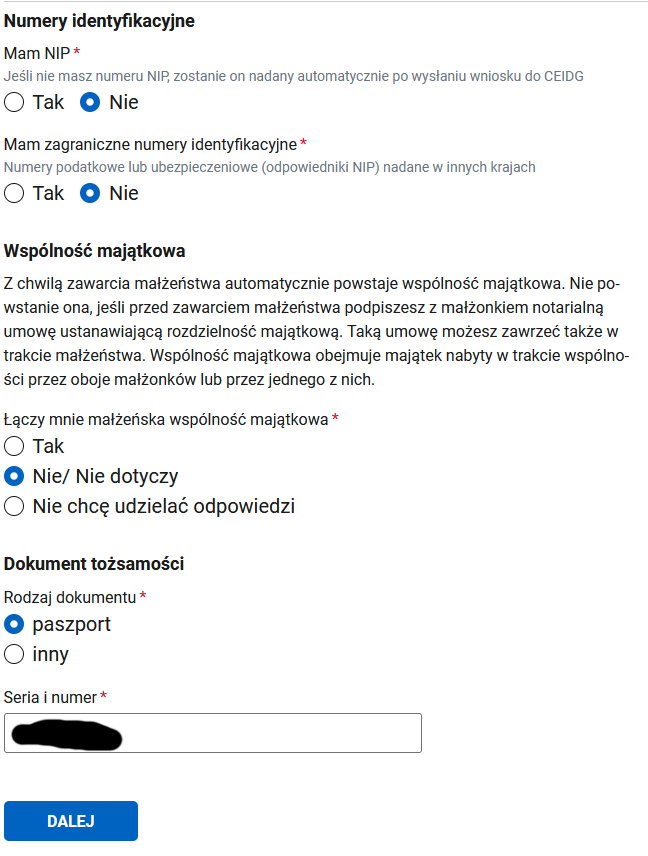
Нажимаем на DALEJ
4. Данные иностранца
Те кто на визе PBH вписывают номер визы и дату выдачи визы, оставляем чек-бокс с консулом, нажимаем на Wyszukaj и выбираем там посольство, которое выдало визу (например для Минска: Ambasada Rzeczypospolitej Polskiej w Republice Białorusi vulica Zmitraka Biaduli 11 :: Mińsk::). Ещё нужно учитывать, что ищет по польским названиям, поэтому Minsk просто так не находится, а Mińsk - находится.
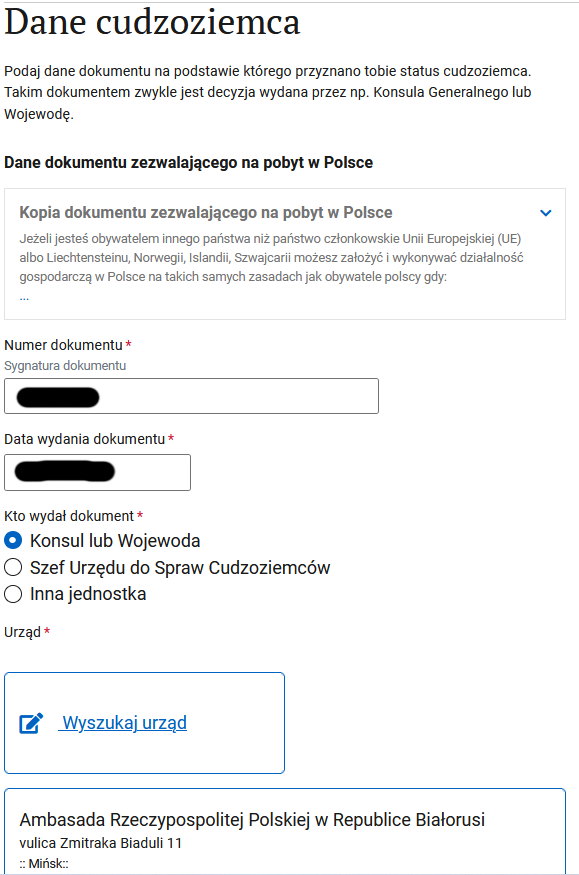
Прикладываем сканы паспорта и визы, выбираем чек-бокс, что вам можно иметь ИП на территории Польши:
Нажимаем на DALEJ
5. Адрес проживания

Нажимаем Dodaj nowy adres
Собственно, вводим адрес и жмём ZAPISZ. И должно получиться как на картинке
Нажимаем на DALEJ
6. Данные ИП
Вводим имя и фамилию, придумываем краткое название, указываем дату начала деятельности и количество работников вместе с вами (то есть если больше работников нет, то 1):

Номера REGON у вас скорее всего ещё нет. Контактные данные - те которые будут видны в CEIDG. Опционально - говорит само за себя, и можно не соглашаться на публикацию в CEIDG.
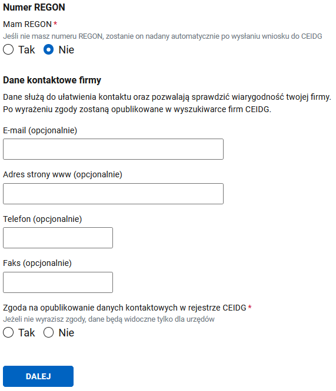
Нажимаем на DALEJ
7. Коды деятельности
Нажимаем на выбрать код, находим подходящий код, он будет основным. Можно добавить несколько, если надо (один всё равно должен быть выбран в качестве основного)

Нажимаем на DALEJ
8. Почтовый адрес
Тут надо указать адресата и собственно адрес для корреспонденции. На этот адрес госорганы будут слать бумажные письма. Нажимаем Dodaj nowy adres и в итоге получится как на картинке:
Нажимаем на DALEJ
9. Адрес ведения деятельности
У ИТ и около есть опция: не имею постоянного места ведения деятельности. У кого такой адрес есть, его и указывайте.

Нажимаем на DALEJ
10. Выбираем способ страхования
Скорее всего это будет ZUS и указываем дату, с которой начинаем платить ZUS (скорее всего будет совпадать с датой начала деятельности):
Нажимаем на DALEJ
11. Скарбовы ужонд
Подтягивается автоматически по ранее введённому адресу, если знаете, что вам в другой, то можно найти более подходящий:

Нажимаем на DALEJ
12. Дополнительные сведения
На этом можно и закончить, но есть возможность сразу зарегистрироваться в ZUS и выбрать систему налогообложения. Чем мы и воспользуемся, выбирая первый пункт:
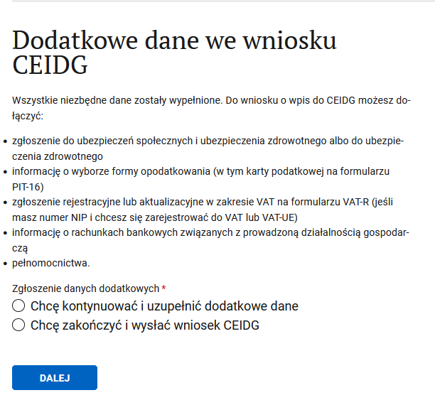
Нажимаем на DALEJ
13. Регистрация в ZUS
Чек-бокс, что хотим зарегистрироваться и что регистрируем только себя (ну или по обстоятельствам выбираем нужные пункты), и выбираем формуляр ZUS ZZA:
Нажимаем на DALEJ
14. Детали ZUS
Если нужна ульга на старт, то её и выбираем, и дальше скорее всего пункты, которые вас не касаются:
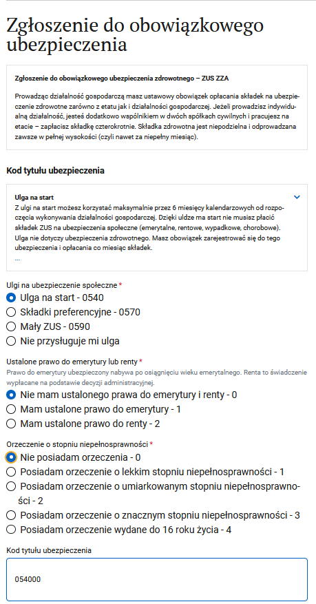
Нужен код деятельности, нажимаем на ссылку и ищем подходящий:

Нажимаем на DALEJ
15. Выбор отдела NFZ
Ищем свой отдел по месту жительства:
Нажимаем на DALEJ
16. Адрес мельдования
Предлагает ранее введённый адрес, если не устраивает, то можно поменять:
Нажимаем на DALEJ
17. Адрес для корреспонденции
Выбираем куда будет приходит бумажная почта, опционально указываем имэйл и телефон для связи:
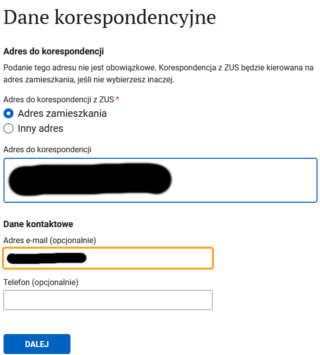
Нажимаем на DALEJ
18. Налоги
Можно сразу выбрать систему налогообложения, нам, конечно, надо:

Нажимаем на DALEJ
19. Выбор системы налогообложения
Собственно выбираем систему налогообложения:

Нажимаем на DALEJ
20. Ведение бухгалтерии
Указываем, кто будет вести бухгалтерию (можно и не соглашаться, тогда, вроде бы, эти данные предоставляются вместе с годовой декларацией):
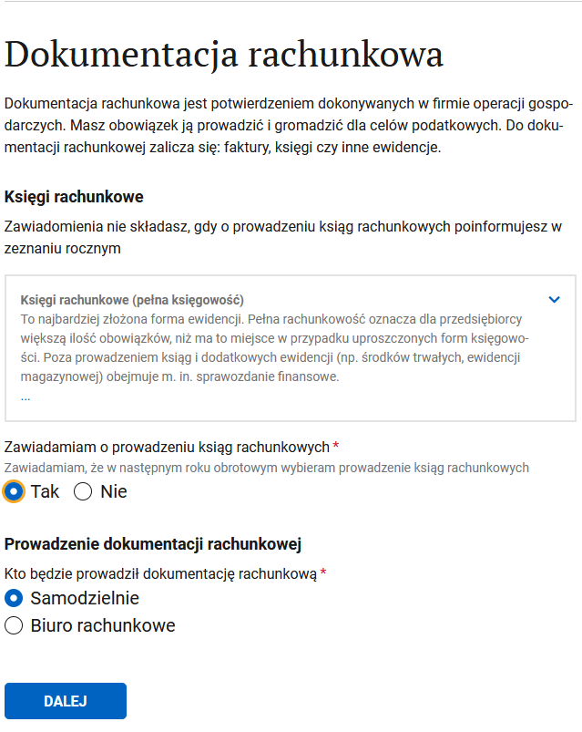
Нажимаем на DALEJ
21. Адрес хранения бухгалтерский документов
Выбираем адрес, где будут хранится бухгалтерские документы

Нажимаем на DALEJ
22. Банковские счета
Счёт в PLN понадобится, чтобы уплачивать налоги. Счета USD / EUR нужны для поступлений из-за рубежа. Разрешено использовать личный счёт (konto osobiste) для ИП. В некоторых случаях обязательно открывать бизнес-счёт (konto firmowe). Подробнее -> https://t.me/JDG_PBH/9236 и https://t.me/JDG_PBH/18806
Если планируете использовать только личный счёт, то его можно и указать. Если планируете открывать бизнес счёт, то его пока нет.
Нажимаем на DALEJ
23. Представительство
Возможно вам нужен представитель, у которого будет от вас доверенность, на какие-то действия. Его можно добавить на этом шаге.
Нажимаем на DALEJ
24. Заявление
Предупреждение об ответственности:

Нажимаем на DALEJ
25. Приостановка деятельности
Скорее всего вот так сразу вы деятельность приостановить не хотите:

Нажимаем на DALEJ
26. Справочная инфа
Рассказывают, где и у кого можно получить больше информации и помощь:

Нажимаем на DALEJ
27. Ещё инфа, итоговая
Морально готовят к тому, что скоро всё закончится:
Нажимаем на DALEJ
28. Подписание документа
Если нажать на ссылки xml, то можно скачать формы себе на память. Выбираем что хотим подписать доверенным профилем (PROFIL ZAUFANY и BANKOWOSC ELEKTRONICZNA - скорее всего приведут к одному и тому же результату, я выбирал банковость, потому что профиль регил через банк):
Дальше переходим на собственно подписание, нужно нажать на Podpisz podpisem zaufanym:

И наконец-то можно выслать подписанные документы:
Что дальше
Дальше вам сообщат о принятии заявления, и что ответ стоит ждать через 24 часа.
NIP может быть присвоен в течении одно-двух дней. REGON надо ждать больше - может выдаваться до недели. Если в процессе есть какие ошибки, то будет сообщение с просьбой исправить.
Проверить все данные вашей фирмы можно на ceidg.gov.pl
Регистрация плательщиком VAT-EU
К этому моменту у вас уже должны быть номера NIP и REGON. По регламенту, у ужонда есть 30 дней для вашей регистрации.
Пока вас не зарегистрируют - нельзя получить выплату!
0. Для чего вообще нужна регистрация VAT-EU
После отправки заявления в налоговую приходит такое письмо: "w związku ze złożeniem do tutejszego Urzędu Skarbowego złożenia druku rejestracyjnego VAT-R, proszę o przestawienie prawa do lokalu w którym jest wykonywana działalność gospodarcza." В ответе на данное письмо необходимо прислать контракт на квартиру, в котором прописано разрешение деятельности, или разрешение собственника отдельной бумагой, или контракт с виртуальным офисом. В прочем, в телеграмме пишут, что можно разобраться с налоговой и без каких-либо заявлений...
Ссылка на портал где происходит регистрация. Нам нужен пункт Zmień dane w CEIDG.
1. Нас встречает важная информация
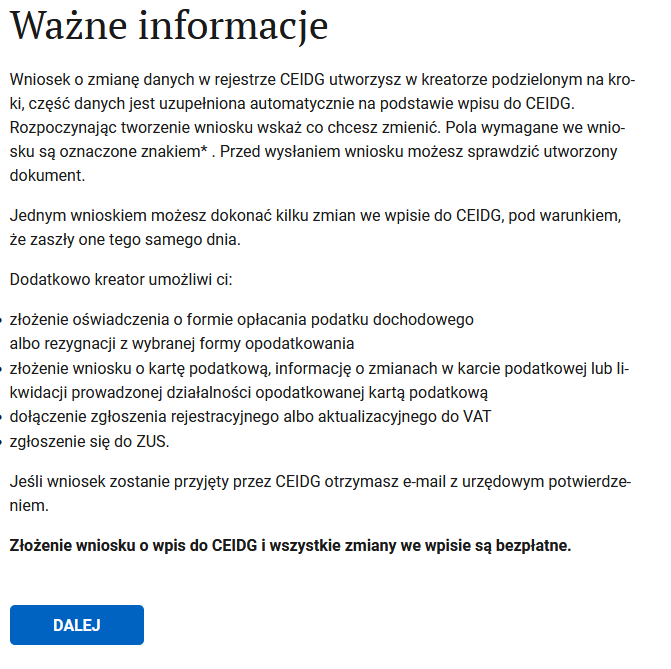
Ознакамливаемся и жмём DALEJ
2. Цель подачи формы
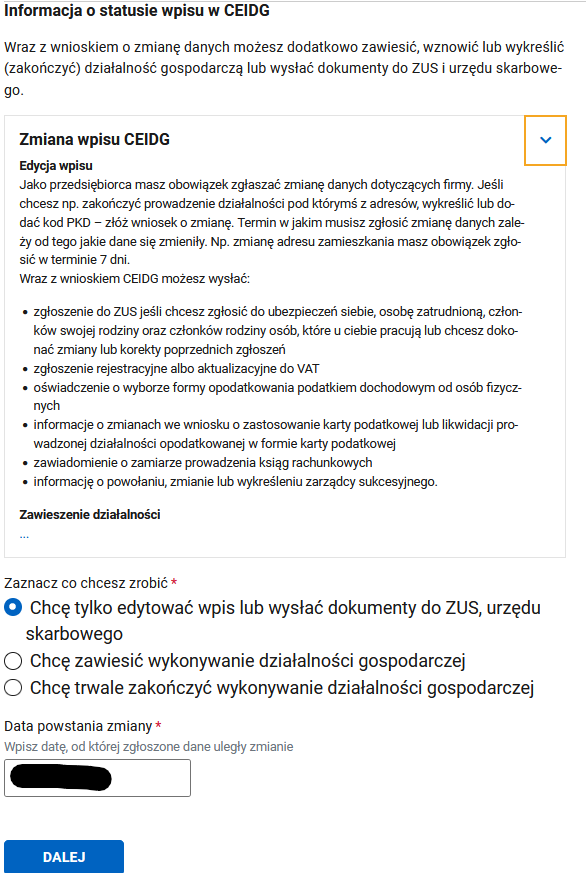
Нам надо только отредактировать данные. Дата может быть текущей, либо в прошлом.
3. Выбираем данные, которые нужно изменить
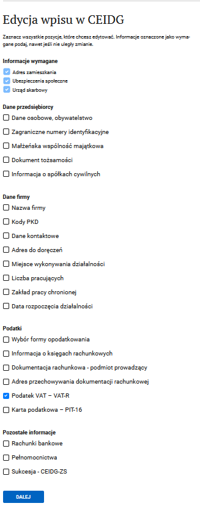
Нас интересует регистрация VAT. Первые три чек-бокса проставляются автоматически.
4. Данные иностранца
Подтверждаем, что являемся иностранцем, который может осуществлять предпринимательскую деятельность на территории Польши.
5. Адрес проживания
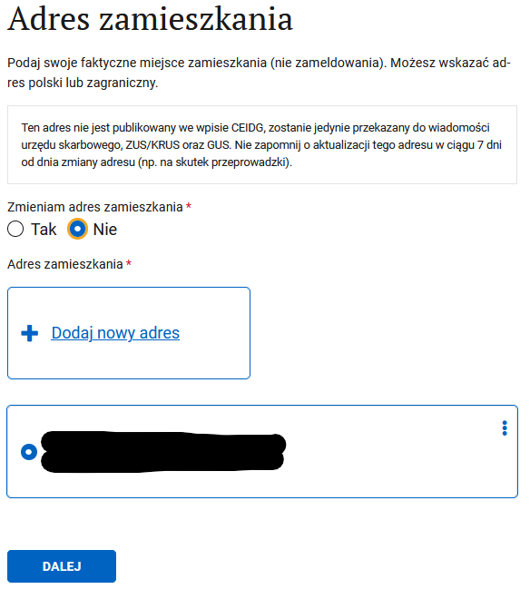
Если надо, то меняем адрес проживания.
6. Страхование
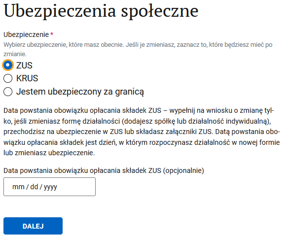
Мы всё ещё остаёмся в ZUS. Дату скорее всего указывали при регистрации в ZUS, поэтому можно её не менять.
7. Изменение данных ZUS
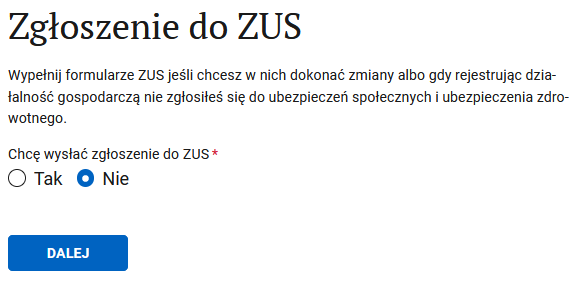
Если не хотим ничего менять, то не меняем.
8. Налоговая
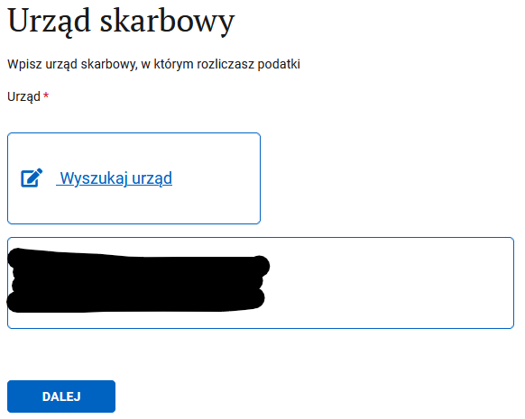
Если надо, то можно поменять налоговую.
9. Собственно, цель заявления
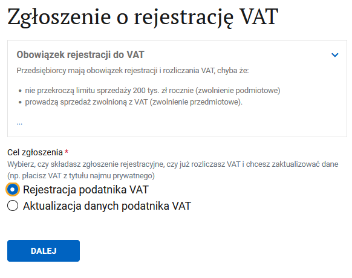
Если мы ещё не были зарегистрированны, то хотим зарегистрироваться плательщиком VAT.
10. Освобождение от VAT
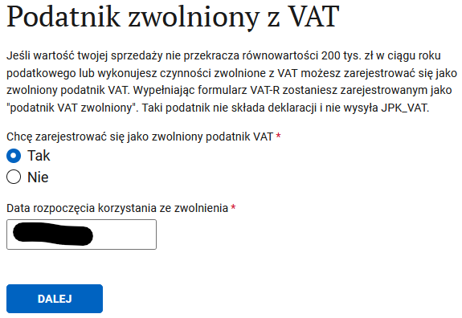
Вариант для тех, кто освобождён от VAT. Дата в моём случае - дата начала деятельности, что довольно логично, потому что я только начинаю деятельность и я не являюсь плательщиком VAT.
11. Идентификационные данные
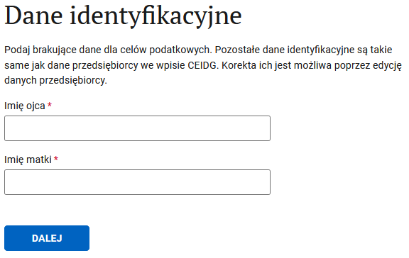
Нужно указать имя отца и матери. Очень желательно, чтобы латиница совпадала с тем, как у них в документах указано. Просто на всякий случай.
12. Наконец-то цель нашего мероприятия
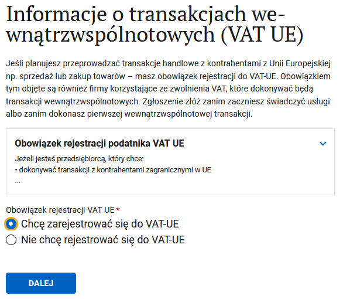
Хотим зарегистрироваться плательщиком VAT-UE
13. Регистрация плательщиком VAT UE
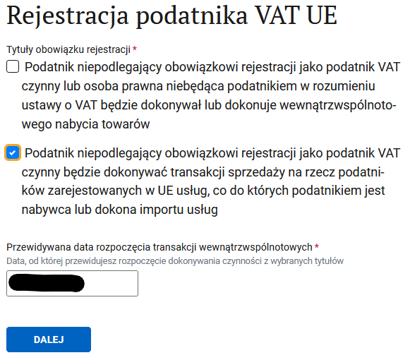
Первый чек-бокс для тех, кто собирается покупать или продавать товары. Второй чек-бокс для тех, кто собирается покупать или продавать услуги. Мы точно знаем, что собираемся продавать услуги, поэтому точно выбираем второй. Для покупки чего-либо, вроде бы, не обязательно быть зарегистрированым. Поэтому если на данный момент точно знаете, что не собираетесь продавать товары на экспорт, то можно одним чек-боксом и ограничится.
Дата регистрации VAT должная быть как минимум на 1 день позже даты подачи заявления. Например, если заявление выслылается 28 апреля, то самая ранняя дата регистрации — 29 апреля.
14. Информация о заявителе
Если нужно, то можно выбрать другую налоговую и указать контактные данные. Опциональные - но они могут упростить коммуникацию с налоговой.
15. Подтверждение регистрации плательщиком VAT
Скорее всего оно вам не надо.
16. Предупреждение об ответственности
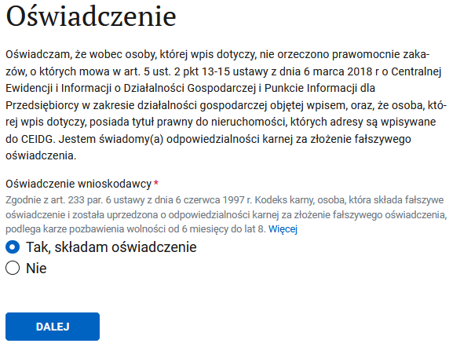
На свой страх и риск соглашаемся с тем, что хотим подать заявление, и ничего криминального в наших начинаниях нет.
17. Где можно получить больше инфы
Просто жмём DALEJ
18. Информация итоговая
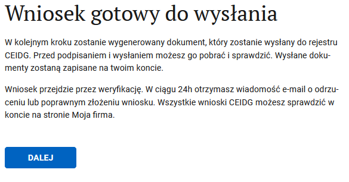
Просто жмём DALEJ
19. Подписание документов
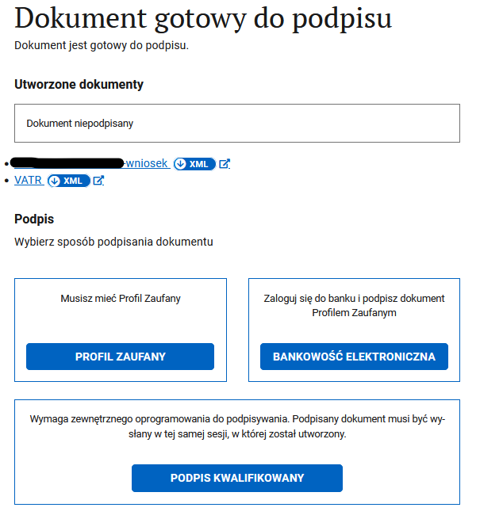
Кликнув на ссылки xml, можно скачать формы себе на память. Выбираем способ подписания. Доверенный профиль и банковость - две стороны одной медали. Если делали доверенный профиль через банк, то можно выбирать банковость.
20. Отправка документов
После нехитрой операции подписания, можно отправить документы.
21. Итог
Дальше ждём письмо от CEIDG, что с заявление всё в порядке, и оно принято и зарегистрировано (или что нужно что-то исправить). И потом в течении месяца придёт бумажное письмо из налоговой о присвоении номера VAT-UE (либо требование о предоставлении дополнительных сведений, особенно актуально для тех, у кого нет постоянного места деятельности). Чуть быстрее, чем бумажное письмо от налоговой, отследить появление номера можно на сайте. Номер VAT-UE - это ваш NIP с приставкой PL. Появляется через пару недель от подачи заявления на регистрацию либо через неделю+ от ответа на требования налоговой.
Так же есть телеграм бот, который позволяет подписаться и отслеживать вашу регистрацию
Регистрация плательщиком внутрипольского VAT
К этому моменту у вас уже должны быть номера NIP и REGON.
0. Для чего регистрировать польский VAT
Польский VAT вам понадобится если вы оказываете услуги польским заказчикам и превысили годовой лимит в 200_000 злотых. Либо вы хотите возвращать VAT c покупок на фирму.
Ссылка на портал где происходит регистрация. Нам нужен пункт Zmień dane w CEIDG.
1. Нас встречает важная информация
Ознакамливаемся и жмём DALEJ
2. Цель подачи формы
Нам надо только отредактировать данные. Дата может быть текущей, либо в прошлом.
3. Выбираем данные, которые нужно изменить
4. Выбираем пункт о регистрации плательщиком VAT
5. Отказываемся от освобождения
Здесь нужно отказаться от освобождения от VAT (лимит 200_000) иначе czynnym плательщиком мы не станем.
6. Причина регистрации VAT-овцем
Выбираем Tytul obowiązku podmiotowego: 32.
7. Дата начала VAT обязательств
Рекомендую выбирать первое число следующего месяца

8. Metoda kasowa
Почитать об этой штуке можно здесь, но вообще, оно нам не нужно. Отказываемся.
9. Золото и такси
Указываем что не ведем бизнес, связанный с такси и торговлей золотом (если правда не ведем, конечно).
10. VAT-UE
Одновременно с польским VAT можно зарегистрировать VAT-UE, гайд по регистрации VAT-UE представлен выше. Если вам не нужно - отказывайтесь.
11. Выбрать тип деклараций
Можно подавать декларации как ежемесячно, так и поквартально. Я рекомендую выбрать ежемесячные декларации. Промежутком времени, за который будет отправлена первая декларация выберите месяц, с которого начинается ваше VAT обязательство (пункт 7 этого руководства).
12. Выберите свою налоговую
13. Подтверждение регистрации VAT
Можете отказаться от платного получения подтверждения регистрации VAT. Вряд ли оно когда-нибудь вам пригодится.
14. Освядчение
Дальше нужно утвердить что вы имеете право пользования адресом, под которым живете (договор аренды, например) и что на вас не распространяются запреты, о которых написано в приведенном законе.
15. Подпись
Дальше как обычно подписываем внесек профилем зауфаны, отправляем и ждем регистрации или письма от налоговой с уточнениями. Если процесс регистрации затягивается - напишите в налоговую или сходите ногами и узнайте чего им не хватает.
Отследить, что вы были зарегистрированы можно на сайте.
Это - так называемый белый список, biała lista, список всех плательщиков VAT.